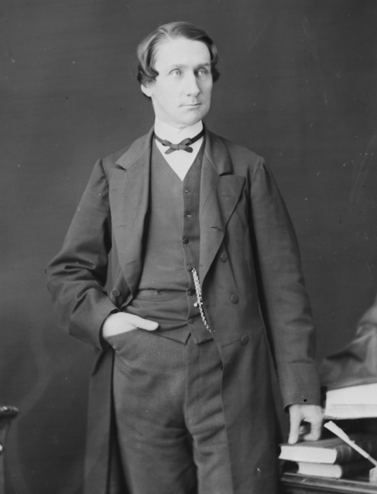
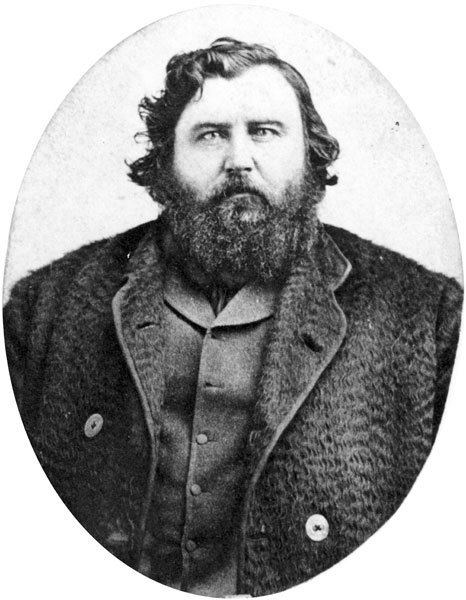

Important People of Treaty 5
Alexander Morris
Born in March 17 1826, Alexander Morris, after goning to school at Queen's University and McGill University, he became a law clerk for John Macdonald and in 1869 Morris became a cabinet member for him, after he would be appointed lieutenant governer of Manitoba where he played a part in treaties 3, 4, 5 and 6. He also wrote a history of the treaties.
James McKay
born in 1828 James McKay was the son of a boayman/guide for the HBC (Hudson Bay Company) and a Metis woman, he had three brothers. He went to school in Red River and after that went to work for HBC just like father. He spoke many languages including English, Freanch, Cree, Ojibwe, and Sioux. In 1860 he left HBC to start his own business of transporting mail, fraight and furs from Manitoba to Edmonton. After a breif stint in the United States to avoid taking sides in the Red River Rebellion he played a part in the Numbered Treaties soon after, thanks to James' multilingual abilities he assisted in the negotiation of Treaties 1, 2, 3, 5 and 6. He reportedly told Indigenous people at Fort Carlton, Saskatchewan: "[Y]ou are the children of the Great Queen as we are, and there has never been anything but peace between us." He ultimatly retired for politics due to worsening health in 1878 and died soon after in 1879.
Swmpy Cree Indigenous Peoples
The Swampy Cree indigenous peoples are a branch of the Cree Nation, located mostly in northern Manitoba. Their native language is Cree. They used subsistence, (which means only using what you need, nothing more), when it came to hunting, fishing foraging, etc. The Cree are the largest group in terms of registered Native American members today with well over 100,000 members.